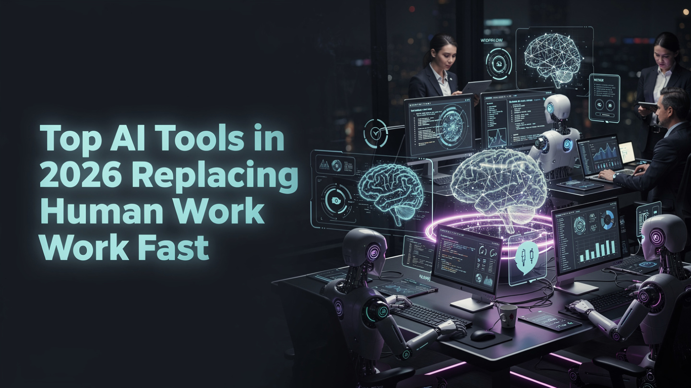

Blog Post
Published - May 03, 2026
Top AI Tools in 2026 Replacing Human Work Fast
Artificial Intelligence is no longer a future concept. In 2026, AI tools are reshaping how people write, design, analyze data, serve customers, and manage daily work.

Artificial Intelligence is actively changing how we work, create, and live. Tasks that once required hours of human effort can now be finished in minutes with AI writing assistants, design generators, analytics platforms, workflow automations, and smart customer support tools. For freelancers, business owners, students, and tech-focused workers, understanding the top AI tools in 2026 is becoming essential for staying competitive.
AI adoption has accelerated because the tools are now practical. Companies use AI to optimize scheduling, logistics, inventory, marketing, cybersecurity, and content production. The result is not only faster output, but a major shift in what human workers are expected to do. For a broader view of this workplace shift, read our guide to AI job changes and workplace automation in 2026.
The Rise of AI in Everyday Work
AI is no longer limited to research labs or large technology companies. It now appears inside email tools, office suites, customer service systems, design apps, accounting software, retail checkout systems, and travel platforms. Businesses use AI to reduce repetitive work and improve decision-making, while individuals use it to write faster, organize tasks, generate ideas, and learn new skills.
1. AI Writing Tools
AI writing tools are among the fastest-growing technologies in 2026. They can generate blog posts, product descriptions, email drafts, social media captions, video scripts, ad copy, summaries, and SEO outlines in seconds.
- They replace or reduce basic content writing, simple copywriting, and entry-level editorial tasks.
- They help teams generate SEO articles, rewrite content naturally, and create marketing copy faster.
- They are most useful when a human editor checks accuracy, tone, originality, and brand fit.
2. AI Image and Design Tools
Graphic design has been transformed by AI image generators and layout tools. Many basic design tasks that once required a designer can now be done quickly with text prompts and templates.
- They replace basic logo concepts, banner mockups, image edits, and social media graphics.
- They generate visuals from text, create marketing assets, and help draft website layouts.
- They still need human direction for brand consistency, accessibility, and polished final design.
3. AI Data Analysis Tools
Businesses are using AI data analysis tools to study large datasets and make decisions faster. These systems can summarize reports, detect patterns, forecast demand, and turn raw data into useful insights.
- They reduce the need for some entry-level data cleaning, market research, and manual reporting tasks.
- They predict trends, analyze customer behavior, and generate dashboards or summaries.
- They are especially powerful in sports analytics, finance, retail, logistics, and marketing.
4. AI in Retail and Self-Service
Retailers are using AI-powered systems to improve inventory tracking, customer recommendations, automated billing, fraud detection, and self-checkout experiences. This reduces the need for repetitive cashier and store assistant tasks.
5. AI in Entertainment and Media
AI is now involved in content planning, video editing, script support, subtitles, recommendations, and audience analysis. Streaming platforms and media teams use AI to personalize what viewers see and to speed up production workflows.
- They reduce basic video editing, simple script drafting, transcription, and tagging work.
- They recommend content, organize media libraries, and help creators publish faster.
- They work best when creative teams use AI as an assistant, not as a complete replacement for original taste.
6. AI Assistants and Automation Tools
AI assistants are replacing parts of administrative and customer support work. They can answer common questions, schedule meetings, summarize documents, draft replies, organize workflows, and connect information across apps.
These tools are especially valuable for small businesses because they reduce manual coordination. To see how companies are applying this kind of automation, explore real AI business use cases and automation trends.
7. AI in Healthcare
AI is transforming diagnostics, medical documentation, patient triage, and healthcare data review. It can analyze medical reports, flag risks, assist doctors, and reduce repetitive data entry. Human expertise remains essential, but AI can save time and improve accuracy when used carefully.
8. AI in Sports and Performance
Sports teams use AI to analyze performance, predict injury risk, review video, and improve strategy. From football and baseball to boxing, wrestling, and motorsports, AI tools help coaches and analysts understand patterns that are difficult to see manually.
9. AI in Music and Creativity
AI music tools can compose background tracks, suggest melodies, write lyrics, clean audio, and generate voice-like effects. This creates new creative possibilities, but it also raises questions about originality, copyright, and the value of human artistic identity.
10. AI in Travel and Weather Prediction
Travel platforms use AI for route planning, price forecasting, delay prediction, weather alerts, and personalized recommendations. These systems help travelers plan safer trips and help companies manage schedules more efficiently.
11. AI in Literature and Education
AI is changing how students and readers work with text. It can summarize classic literature, explain difficult passages, create quizzes, translate concepts, and personalize study plans. The best educational use of AI supports learning instead of replacing critical thinking.
12. AI in Law and Governance
Legal teams and policy analysts use AI to organize documents, review cases, summarize regulations, and identify patterns in large text collections. These tools speed up research, but legal judgment, ethics, and accountability still require human oversight.
13. AI in Finance and Risk Management
Finance teams use AI tools to detect fraud, analyze market trends, review risks, automate reports, and organize complex documents. AI can support financial decision-making, but businesses still need careful review because incorrect predictions can become expensive quickly.
14. AI in Personal Productivity
AI productivity tools help individuals write emails, manage schedules, plan projects, summarize meetings, generate ideas, and automate repeated workflows. For creators, influencers, and professionals, these tools can act like a personal operations assistant.
15. AI in Motorsports and Engineering
Engineering teams use AI for simulation, safety analysis, performance tuning, design testing, and predictive maintenance. In fields like racing, aviation, and manufacturing, AI can improve speed and safety by analyzing data faster than humans can manually review it.
The Dark Side of AI Replacing Jobs
AI tools bring real benefits, but they also create serious concerns. Job displacement, over-reliance on automation, biased outputs, privacy risks, and inaccurate information are all part of the conversation. AI can sound confident even when it is wrong, so human review matters. For a deeper look at these risks, read about the main challenges, limitations, and risks of AI.
The Future of AI: What to Expect
The future of AI is both exciting and uncertain. AI will not just replace jobs; it will redefine them. Many roles will shift toward reviewing outputs, managing tools, improving workflows, and combining technical judgment with human creativity.
How to Stay Relevant in the AI Era
- Learn AI tools: Understand how to use AI instead of competing blindly against it.
- Focus on creativity: AI can generate options, but human taste, empathy, and strategy still matter.
- Build technical skills: Coding, automation, data analysis, cybersecurity, and prompt skills are increasingly valuable.
- Practice verification: Check sources, review outputs, and avoid trusting AI results without context.
AI is moving quickly, but the workers who adapt will have an advantage. The best approach is to learn the tools, understand their limits, and build skills that make human judgment more valuable in an automated world.